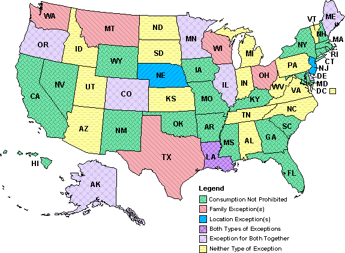

Poll: Do you support lowering the age for legal alcohol consumption to 18? (25 votes)
#19252 1 2008-02-20T22:11:16Z rocket_thumped Wikipedia Article.
I think that if you can get shot for your country, you should be able to take shots in your country. Really, a large majority of 18 to 20 year olds already drink alcohol. If anything the only thing that would change is the number of arrests.
#410992 2 2008-02-20T22:42:52Z Kablizzy I think raising the age limit for military enlistment and voting would be better. There are dudes at 21 who aren't responsible enough to hold their alcohol; I'd rather not force that number to grow.
#411002 3 2008-02-20T23:25:04Z Guest We have enough drunk college kids as it is.
#411023 4 2008-02-21T00:29:54Z scythe33 I support lowering it farther. That's partially because of where I live. Where I live, anybody can take a boat 50 miles offshore, and there it's legal over 18. I find it silly that something that's legal just 50 miles away is illegal here, ostensibly wrong de novo. In the end, who are we to tell people whether or not they can eat something? We can (and should) advise against it, but it comes down to a product that human beings have been able to make since prehistory. It's not some industrially synthesized, complex, artificial compound; it's a bunch of grape juice left to ferment.
It might very well be dumb, but you can't legislate intelligence. Hell, do you think there would be all the hoopla surrounding alcohol if we treated it like caffeine? Nobody, and I mean freaking nobody goes to a bar and drinks twelve Coca-Colas. Nobody even gets to five Cokes. Yet we have people who go to bars nightly to drink nearly twenty bottles of beer. It's the culture that surrounds it; the fact that the government surrounds alcohol with a bureaucracy, makes it an activity, because you have to jump through hoops to get it.
And yes, alcohol is addictive. Caffeine is also addictive, in larger amounts. You can't get addicted to caffeine drinking one or two Cokes a day. You can, however, get addicted to caffeine if you drink three or four espressos in a day. The same (mostly) goes for alcohol. I know few people who drink a beer a day and can't stop themselves. I know too many that drink twelve.
#411024 5 2008-02-21T00:32:23Z Myrrhman Think about other countries, especially Europe, W_T. When exposed at an early age, there's less of a rebellious urge to consume alcohol.
But I think America is in a tricky place because of how young we let people drive; I know in other countries, the ages are reversed making people have a better understanding of their tolerance, instead of better understanding of their driving capabilities and confidence.
I'm not saying this conclusive (America being a much bigger car culture than other nations) but it something to consider.
#411027 6 2008-02-21T00:42:23Z Pepi Absolutely. Old enough to kill, but not to drink? That's ridiculous. Kablizzy's suggestion is a good one though.
#411030 7 2008-02-21T00:49:59Z epigone The problem with this discussion is that 99% of you are below 21 years of age, and thus have a natural bias toward the lowering of the drinking age - even if you don't drink yourself you want the right to do it. If you talk to people above 21, I think you would find that a smaller proportion would lower the drinking age.
#411048 8 2008-02-21T01:22:40Z Atilla It's already 18 over here. To all those who say "We should lower the legal drinking age because people of that age drink anyway", bad idea. Underage drinking is rife over here, although that's partly cultural. I think you're going to have a fair bit of underage drinking near the age limit, regardless of what that limit actually is.
Anyway, I think changing the culture is more important than screwing around with age limits - though, if anything, I'd support raising the drinking age to 21. One thing which would be interesting but probably unfeasible would be having different limits for different contexts and gradually phasing alchohol in, rather than having a date where you can suddenly yell "HEY GUYS LET'S ALL GET TRASHED." For example, having a single glass of wine with dinner isn't likely to make anyone an alcoholic, and I wouldn't mind if 16 year-olds could do so (and they can, if they're with their parents). However, they certainly shouldn't be able to buy a three bottles worth, or go to the pub and have twelve shots.
#411156 9 2008-02-21T09:13:29Z southpaw I support lowering it farther. That's partially because of where I live. Where I live, anybody can take a boat 50 miles offshore, and there it's legal over 18. I find it silly that something that's legal just 50 miles away is illegal here, ostensibly wrong de novo. In the end, who are we to tell people whether or not they can eat something? We can (and should) advise against it, but it comes down to a product that human beings have been able to make since prehistory. It's not some industrially synthesized, complex, artificial compound; it's a bunch of grape juice left to ferment.
First of all, it isn't grape juice. It's yeast and the chemical reactions involving yeast and hops. Unless you are talking just about wine, but I think wine is less consumed on a daily basis than beer, making beer the bigger problem.
Second of all, beer hasn't always been about getting drunk. In early history beer had a higher alcohol content but it was also made with spices, herbs and other things that made it much healthier than a Budweiser. Beer was often drunk instead of water because water was not always the best thing to drink (waterborne disease, parasites, dirt).
There are reasons why drinking age is at 21. IMO it should be raised or abolished. It may just be a personal opinion, but if you want alcohol you should have to mix it yourself or not at all.
#411158 10 2008-02-21T09:36:14Z Kablizzy I'm with Atilla hardcore. Let's /globally/ increase the legal drinking age to 21, with the exception of some moderate drinking - For instance, bars and the like should be strictly 21 and over, but buying a bottle of wine for you and the girlfriend isn't a big deal.
Also, as an aside, I don't run kids over after drinking a gallon of grape-juice.
#411159 11 2008-02-21T09:58:22Z Dead_N It won't really matter if we lower the drinking age or not because people below 18 have their sources to get alcohol, in other words: These young people get 'trustworthy', older people to get all the alcohol they want.

#411190 12 2008-02-21T14:42:16Z wedgie I don't see it making much difference. People still drink that are under 21.
Here in the U.K. it is also 18+, yet people that are under 18 still drink. I also think that if the drinking age here was raised to 21 then people would still be drinking at about the same ages anyway.
For this reason, I think that lowering would be better. As you would at least then have 18 year olds in pub and other establishments that would be keeping them off the streets. Because those kids are going to drink anyway, regardless of if the drinking age is 18 or 21. So I see it as being better to have this going on in pubs rather than on the streets. I suppose being in England may sway my view a little, since it happens so heavily here.
#411217 13 2008-02-21T16:32:21Z Cossack I don't see it making much difference. People still drink that are under 21.
Here in the U.K. it is also 18+, yet people that are under 18 still drink. I also think that if the drinking age here was raised to 21 then people would still be drinking at about the same ages anyway.
For this reason, I think that lowering would be better. As you would at least then have 18 year olds in pub and other establishments that would be keeping them off the streets. Because those kids are going to drink anyway, regardless of if the drinking age is 18 or 21. So I see it as being better to have this going on in pubs rather than on the streets. I suppose being in England may sway my view a little, since it happens so heavily here.
Ditto for scotland. its as easy to get a hold of drink for under 18s here as it is for anyone else. even after new laws were brought in for everyone to get ID'd when buying alcohol, its still as easy. before i was 18 i had easy access to the stuff, i just chose not to overindulge and binge drink myself into a stupor. i think its not the age thats the thing that needs changing but the younger peoples view on alcohol and the whole culture of it.
also - raising the limit or removing it completely (do you mean no age limit or prohobition?) will lead to worse results. it would mean that more people are now doing something illegal but wont change a thing in the alcohol intake. (bearing in mind that this is for a place that has had 18 as the limit for a while. if its just been implemented then moving back up to 21 wouldnt be bad, but leaving it where it is i think is the better option)
#411220 14 2008-02-21T17:50:37Z blue_tetris This is largely unrelated to the argument, but...
I find that the comparison "You can die for your country, so why can't you drink alcohol" to be largely nonsequitur. I chuckle a little every time I read that argument. It reminds me of the "We can put a man on the moon, so why can't we X?" for any value of X. It's a shade absurd.
That said, at age 18, I was annoyed about the law; at age 19, I drank myself into a stupor; at age 21, I legally drank myself into another stupor; and I've been drinking myself stupid ever since.
The law doesn't affect what you can do, only what you can do in public places--such as a bar, a store, etc. People under 21 can drink, so the question is: Should they be able to drink at bars or buy their own alcohol?
I withhold my opinion for now. Suffice it to say that I believe in greater freedoms for citizens, but I also think that three years is not a long time and the law is only enforcable in certain situations. When you get to college and say to yourselves "Oh darn, I can't drink alcohol yet!", you'll be sadly mistaken.
#411234 15 2008-02-21T20:04:22Z Limer Hmm,
its not like the law actually stops persons below 18 from drinking.
I'm 15 and most of my friends drink.
It wouldn't make a difference if the age limit was changed tbh.
#411248 16 2008-02-21T21:28:12Z Kablizzy "Kids drink anyway" is the worst reason for any law changes ever. Kids do a lot of stupid crap, but that should never affect the legality of something.
#411251 17 2008-02-21T22:11:18Z blue_tetris People murder, rape, and assault anyway. It doesn't mean those actions should be legal.
#411252 18 2008-02-21T22:13:59Z Ad It's 18 for drink, and recently smokes, here. Infact, I could legally buy cigarettes for two months before the laws changed.
Anyway, it's a silly idea, I've always thought 21 as in US was a good idea.
#411300 19 2008-02-22T00:03:15Z Myrrhman Related to the topic, do you think the age limit of 21 has something to do with the country's very high death rate due to drunk driving?
I remember my Art History professor jokingly saying that it was "the most American way to die."
#411308 20 2008-02-22T00:10:36Z scythe33 Whoa. Scratch that post. Have a look at this map, because it's profoundly important as far as understanding the real law:

In other words, in many states, there is no true drinking age, though there is a minimum age to purchase alcohol. I can drink legally, believe it or not. I'm forced to argue that the topic is essentially moot. #411315 21 2008-02-22T00:24:53Z wedgie "Kids drink anyway" is the worst reason for any law changes ever. Kids do a lot of stupid crap, but that should never affect the legality of something.
I see it more as "Kids are going to drink anyway so what does it matter what the age limit is?"
The law shouldn't be changed just because people break that law, as you say. The point is that said law
will be broken, regardless of the specifics of that law. It's just a sad truth really.
#411413 22 2008-02-22T08:54:09Z southpaw People murder, rape, and assault anyway. It doesn't mean those actions should be legal.
We are not talking about the legality of things. We are talking of lowering/raising the minimum requirements for certain laws.
Saying "people murder and rape anyway, so it should be legal," is different than saying "kids drink anyway, so the minimum age to drink should be lowered." There's still a restriction on the second where there is not with the first.
#411423 23 2008-02-22T10:23:39Z The New Harley In australia it already is. You've missed a word, it should be legal age, because I already drink. Shamefully. But its not like I drink to get drunk, it's more social drinking.
#411425 24 2008-02-22T10:26:38Z Condog In australia it already is. You've missed a word, it should be legal age, because I already drink. Shamefully. But its not like I drink to get drunk, it's more social drinking.
Plenty of my friends get themselves totally blasted every single weekend, and all except a few are underage.
As for me, i just don't see the appeal.
#411427 25 2008-02-22T10:30:47Z Infernus Alcohol already negatively impacts on many facets of society. 21 is a definite minimum.
The human body only starts to decline in important physiological development in the 20's (in most situations) and alcohol consumed before then harms the body more dramatically. Alcohol should only be available after this development is complete.
Some may argue, however, that by these ages the decision to drink should be a personal one. Why then can't you buy heroin at the expense of your health? Yes, there is a difference in severity, but the concept is the same.
The social impacts alcohol have on youth are often hidden, as they may not surface physically. I have a friend who has not completed his schooling and will never meaningfully contribute to the community, solely due to alcohol. I have at least three other friends who have had their grades significantly affected by alcohol. Why make this problem worse?
#411429 26 2008-02-22T10:34:09Z Condog I have a friend who has not completed his schooling and will never meaningfully contribute to the community. I have at least three other friends who have had their grades significantly affected by alcohol. Why make this problem worse?
Those friends i was talking about above? That quote sums them up. Almost every one of them. Quite sad when you think about it.
#411434 27 2008-02-22T11:05:52Z Cossack Alcohol already negatively impacts on many facets of society. 21 is a definite minimum.
The human body only starts to decline in important physiological development in the 20's (in most situations) and alcohol consumed before then harms the body more dramatically. Alcohol should only be available after this development is complete.
Some may argue, however, that by these ages the decision to drink should be a personal one. Why then can't you buy heroin at the expense of your health? Yes, there is a difference in severity, but the concept is the same.
The social impacts alcohol have on youth are often hidden, as they may not surface physically. I have a friend who has not completed his schooling and will never meaningfully contribute to the community, solely due to alcohol. I have at least three other friends who have had their grades significantly affected by alcohol. Why make this problem worse?
the problem there is not with the age limit of the kids but with the culture and the idea they have of it. i grew up in a location and culture where people drink a lot, but in social situations and in ways that reduce the damage (people get together and drink, but have food, with it and drink in moderation and dont binge on it). naturally there are always people who get blootered, but mostly it was reasonable. so for these kids the idea of getting totally trashed should be removed. if the drink is given at an earlier age in small quantities by parents and generally they dont make it something of a taboo for the kids then alcohol wont be as desirable and kids wont try and show how grown up they can be by destroying themselves. its all about the upbringing, not the actual age.
#411572 28 2008-02-23T02:14:03Z Atilla Because those kids are going to drink anyway, regardless of if the drinking age is 18 or 21. So I see it as being better to have this going on in pubs rather than on the streets.
It starts in pubs. Then the drunkards spill onto the streets anyway, and fight and vandalise and rape. It's no coincidence that violent crime in Melbourne tends to be highest in areas with a great number of pubs and nightclubs.
@Dave: The comparison isn't about dying for your country, but rather being entrusted with lethal weapons, etc.
#411588 29 2008-02-23T03:18:32Z rocket_thumped Whoa. Scratch that post. Have a look at this map, because it's profoundly important as far as understanding the real law:
In other words, in many states, there is no true drinking age, though there is a minimum age to purchase alcohol. I can drink legally, believe it or not. I'm forced to argue that the topic is essentially moot.
That's only consumption, I'm pretty sure there is still a limit on your blood alcohol content level.
#411592 30 2008-02-23T03:29:18Z blue_tetris The cops cannot legally go around testing your blood alcohol content unless you're being disruptive or disorderly in public.
#411634 31 2008-02-23T06:49:45Z 47 When I was 15, I would constantly tell my mom it should be ok for me to see R-rated movies. I mean, c'mon, I'd be 17 in two years, I wasn't going to magically become immune to sex and violence then and somehow be different, I'd tell her. More "mature." Of course, I was seeing R-rated movies anyway without her seal of approval and just lying about it, saying I saw Happy Feet but actually seeing Hot Fuzz or something of the sort, but just for the principle of the thing I wanted to hear her say that she would let me see R-rated films. I saw it as a passage to manhood. A way for me to make my own decisions.
And of course, my mom saw it different. For whatever reason, she simply would not let me see R-rated films. Maybe it was out of principle, but she simply wouldn't let me. She wasn't swayed by logic, begging or comparison. She was a rock of stubbornness that only parents can become.
So I gave up. And everytime I saw a R-rated movie, even though I knew those ticket takers didn't care whether I was seeing Zathura or Shortbus, my heart would jump a little. It sounds lame, I know. But it was an adventure. Every kid needs that experience to be successful in life, I think: a little defiance, and the taste of getting away with it. And besides, I mean, it's not like I was going to look back on my movie-going experiences when I'm 17 and think "Oh, man, I really wish I hadn't seen The 40-year-old Virgin a couple years ago."
I don't think the drinking age should be lowered to 18.